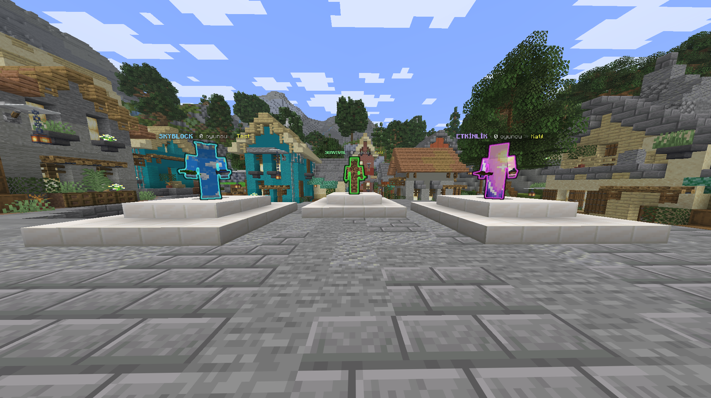
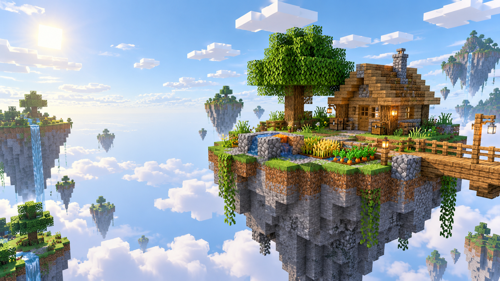

Oyunlar

Survival
Arazi koruma, meslekler ve oyuncu pazarı.
Survival rehberi
Temsili görselSkyblock
Takım adaları, görevler ve günlük siparişler. Sınırlı test erişiminde.
Skyblock rehberi
Rob's Village
Kurt köylü, gizli roller ve oylama.
Oyun ve rollerOyunlara lobideki pusuladan veya NPC'lerden geçebilirsin.
Bağlantı bilgileriVIP Paketleri
Survival ev ve depo kapasiteleri, kitler ve kullanım hakları.
Paketleri karşılaştır Para veya meslek kazancı çarpanı verilmez.